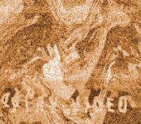

<!DOCTYPE html>
<html>
    <head>
        <meta charset="utf-8">
        <meta http-equiv="X-UA-Compatible" content="IE=edge">
        <meta name="viewport" content="width=device-width, initial-scale=1">

        <title>MalikB and Mr.Green</title>
        <meta property="og:"content="MalikB and Mr.Green"/> <!-- should be the same as the "Title" tag -->
        <meta property="og:site_name"content=""/> <!-- Provides Facebook the name that you would like your website to be recognized by -->
        <meta property="og:image" content=""/> <!-- Provides Facebook with an image to use when the page is shared -->
        <meta property="og:description " content="MalikB and Mr.Green"/> <!-- Provides Facebook with description text to show -->
        <meta name="description"content="">


        <link rel="stylesheet" href="css/normalize.css">
        <link rel="stylesheet" href="css/main.css">
        <link rel="stylesheet" href="css/magnific-popup.css">
        <link href= "js/jquery-1.9.1.min.js">


<script>
  (function(i,s,o,g,r,a,m){i['GoogleAnalyticsObject']=r;i[r]=i[r]||function(){
  (i[r].q=i[r].q||[]).push(arguments)},i[r].l=1*new Date();a=s.createElement(o),
  m=s.getElementsByTagName(o)[0];a.async=1;a.src=g;m.parentNode.insertBefore(a,m)
  })(window,document,'script','//www.google-analytics.com/analytics.js','ga');

  ga('create', 'UA-58752435-1', 'auto');
  ga('require', 'displayfeatures');
  ga('send', 'pageview');

</script>


  
        
</head>


<body>


<div class="wrap">

 <div class="socials-bar">

      

      


<!-- facebook // add facebook page url to both  -->
            <div class="mobile-hide facebookfollow">
                  <iframe src="//www.facebook.com/plugins/follow.php?href=https://www.facebook.com/greenhiphop&amp;width&amp;height=80&amp;colorscheme=light&amp;layout=button&amp;show_faces=true" style="width:64px;" scrolling="no" frameborder="0" allowtransparency="true"></iframe>
            </div>


            <!-- twitter  // replace "artistname" with the twitter handle -->
            <div class="mobile-hide twitterfollow" >
                <iframe allowtransparency="true" frameborder="0" scrolling="no"
                  src="//platform.twitter.com/widgets/follow_button.html?show_count=false&amp;show_screen_name=false&amp;screen_name=greenhiphop"
                  style="width:60px; height:20px;"></iframe>
            </div>   


     
                  
           
        </div>
      
        <!-- documentation: http://drinchev.github.io/monosocialiconsfont/ 

        add "circle" to put it in a circle, "rounded" to put it in a rounded square, or leave black for just the icon itself

        icons in this font: fivehundredpx • aboutme • addme • amazon • aol • appstorealt • appstore • apple • bebo • behance • bing • blip • blogger • coroflot • daytum • delicious • designbump • designfloat • deviantart • diggalt • digg • dribble • drupal • ebay • email • emberapp • etsy • facebook • feedburner • flickr • foodspotting • forrst • foursquare • friendsfeed • friendstar • gdgt • github • githubalt • googlebuzz • googleplus • googletalk • gowallapin • gowalla • grooveshark • heart • hyves • icondock • icq • identica • imessage • itunes • lastfm • linkedin • meetup • metacafe • mixx • mobileme • mrwong • msn • myspace • newsvine • paypal • photobucket • picasa • pinterest • podcast • posterous • qik • quora • reddit • retweet • rss • scribd • sharethis • skype • slashdot • slideshare • smugmug • soundcloud • spotify • squidoo • stackoverflow • star • stumbleupon • technorati • tumblr • twitterbird • twitter • viddler • vimeo • virb • www • wikipedia • windows • wordpress • xing • yahoobuzz • yahoo • yelp • youtube • instagram
        -->

    </div>
 


<!-- /////////////////////////////////////////////////////////-->
    <!-- //////////////////////content //////////////////-->
    <!-- /////////////////////////////////////////////////////////-->
    
        <div class="main"><div class="content">


        
        
        <div class="footer">
        <a class=" popup-youtube Logo" data-height="525" data-width="700" href="https://www.youtube.com/watch?v=9uFUQ7aVBTA"></a>

        


        <div id="buy">
        
        <a href="http://geni.us/unpredictablecd?Track=Splash" target"_blank">
        <a href=" http://geni.us/unpredictable?Track=Splash" target"_blank">

        </div>
        <div id="socials"> 
            <a href="http://www.livefromthestreets.com/ " target"_blank">    
            <a class='symbol' href="http://instagram.com/greenhiphop" alt="instagram" target="_blank"><span class='symbol'>&#xe100;</span></a>
            <a class='symbol ' href="https://www.facebook.com/greenhiphop" alt="Facebook" target="_blank"><span class='symbol'>&#xe027;</span></a> 
            <a class='symbol' href="https://twitter.com/greenhiphop" alt="twiiter" target="_blank"><span class='symbol'>&#xe087;</span></a>
            <a class='symbol mobile-hide' href="https://www.youtube.com/user/greenhiphop" alt="Youtube" target="_blank"><span class='symbol'>&#xe099;</span></a>
           
            
         </div> 

         
         <div class="box"></div>

        </div></div>

    <!-- /////////////////////////////////////////////////////////-->
    <div class="bg"></div>

        <div class="soundcloud mobile-hide"></div> <!-- spacing for the stratus player -->

    <!-- Tradedesk pixel -->


    <!-- /////////////////////////////////////////////////////////-->
    <!-- //////////////////////Social Media Bar //////////////////-->
    <!-- /////////////////////////////////////////////////////////-->


            

</div>

    


<!-- /////////////////////////////////////////////////////////-->
<!-- ////////////////////// Javascript ///////////////////////////-->
<!-- /////////////////////////////////////////////////////////-->
        
       <!-- / // Tag javascrpt /-->
        <script type="application/javascript" src="//uadx.com/s/d60137e0-00a7-11e4-92b4-22000afe405e"></script>


        <script src="http://code.jquery.com/jquery-1.9.1.js"></script>
        <script src="http://code.jquery.com/jquery-migrate-1.2.1.js"></script>
        <script src="https://apis.google.com/js/platform.js"></script>
        <script type="text/javascript" src="http://stratus.sc/stratus.js"></script>
        <script src="js/jquery.magnific-popup.js"></script> 
        <script src="assets/js/jquery-1.9.1.min.js"></script> 
        <script type="text/javascript">
         // Pop Up
           $(document).ready(function() {
               $('.popup-youtube, .popup-vimeo, .popup-gmaps').magnificPopup({
                 disableOn: 700,
                 type: 'iframe',
                 mainClass: 'mfp-fade',
                 removalDelay: 160,
                 preloader: false,

                 fixedContentPos: false
               });
             });
           $('.open-popup-link').magnificPopup({
             type:'inline',
             midClick: true // Allow opening popup on middle mouse click. Always set it to true if you don't provide alternative source in href.
           });
           
           // Stratus
           $(document).ready(function(){
    $.stratus({
    auto_play: true,
    align: 'top',
    color: '000000',
      links: ''
    });
  });
</script>


    
     </script>


        <script type="text/javascript">
        $(window).load(function() {    
        
        $('#bg').fadeIn('slow');

        var theWindow        = $(window),
            $bg              = $("#bg"),
            aspectRatio      = $bg.width() / $bg.height();

        function resizeBg() {

                if ( (theWindow.width() / theWindow.height()) < aspectRatio ) {
                    $bg
                        .height(theWindow.height())
                        .width(($bg.height()) * aspectRatio)
                        .css('top',0)
                        .css('left', (theWindow.width()-$bg.width())/2 );
                } else {
                    $bg
                        .width(theWindow.width())
                        .height(($bg.width()) / aspectRatio)
                        .css('left',0)
                        .css('top', (theWindow.height()-$bg.height())/2 );
                }

        }

        theWindow.resize(function() {
                resizeBg();
        }).trigger("resize");

});

<script>
  (function(i,s,o,g,r,a,m){i['GoogleAnalyticsObject']=r;i[r]=i[r]||function(){
  (i[r].q=i[r].q||[]).push(arguments)},i[r].l=1*new Date();a=s.createElement(o),
  m=s.getElementsByTagName(o)[0];a.async=1;a.src=g;m.parentNode.insertBefore(a,m)
  })(window,document,'script','//www.google-analytics.com/analytics.js','ga');

  ga('create', 'UA-58752435-1', 'auto');
  ga('require', 'displayfeatures');
  ga('send', 'pageview');

</script>
        
</script>
<script src="assets/js/jquery-1.9.1.min.js"></script> 

</body>

